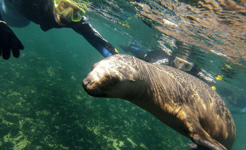
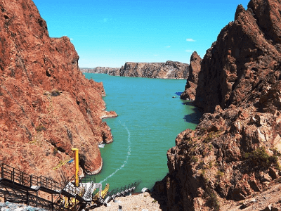

Área Metropolitana de VIRCH-Valdés
El Área Metropolitana de VIRCH-Valdés está ubicada al noroeste de la provincia del Chubut e incluye 6 municipios: Trelew, Gaiman, Rawson, Veintiocho de Julio, Dolavon y Puerto Madryn. Desde la costa hacia la meseta, la prehistoria, la vida de los colonos galeses y la naturaleza se conjugan en un recorrido por El Valle Inferior del Río Chubut.
Puerto Madryn
Antes del comienzo de la temporada de ballenas, Puerto Madryn atrae a sus visitantes con buceo y snorkel, excursiones en vehículos todo terreno, paseos guiados por los sitios históricos que remiten a los primeros colonos galeses, platos típicos de la Patagonia y un recorrido por la incipiente actividad vitivinícola. Está ubicada a 65 km de Trelew.
Península Valdés
.png)
Península Valdés es un lugar excepcional para ver ballenas francas. Hay dos modalidades para observarlas: avistaje embarcado y avistaje desde la costa en el Área Protegida de El Doradillo, a muy pocos metros de la orilla, una extensa playa 15 km al norte de Puerto Madryn. La ballena franca austral elige esta zona para reproducirse y amamantar sus crías.
Rawson / Playa Unión
.png)
Todos los días del año, el Puerto de Rawson ofrece la posibilidad de disfrutar de un paseo náutico en su mítico mar para realizar avistaje del delfín de Commerson (Delfin Patagonico). La ciudad de Rawson está ubicada a 21 km de Trelew.
Playa Unión es el balneario de esta ciudad, se caracteriza por su belleza agreste y el poder de sus olas, siendo el escenario perfecto para realizar actividades de aventura.
Gaiman
.png)
Gaiman se destaca por mantener las costumbres y tradiciones de los colonos galeses llegados en 1865. El té es una actividad imperdible por su exquisitez y tradición. Una de sus casas de té, Ty Te Caerdydd, fue visitada por la Princesa Diana en 1995.
Dique Florentino Ameghino
Es una central hidroeléctrica ubicada a 140km de Trelew. Un oasis en la Patagonia, ideal para visitar en verano, donde se pueden realizar actividades de recreación, pesca de truchas y actividades de aventura como flotada, rafting, trekking, rappel, tirolesa, escaladas en las altas murallas de roca rojiza, etc..
Parque paleontológico Bryn Gwyn
.png)
Es una zona natural de yacimientos fósiles ubicada a 7 km al sur de Gaiman y al oeste de Trelew. Allí podrá observar fósiles, parcialmente expuestos, de ejemplares hallados por los investigadores a lo largo de los años.